한국사능력검정시험-심화 (2017-01-21 기출문제)
1. 밑줄 그은 '이 시대'의 사회 모습으로 옳은 것은? [1점]
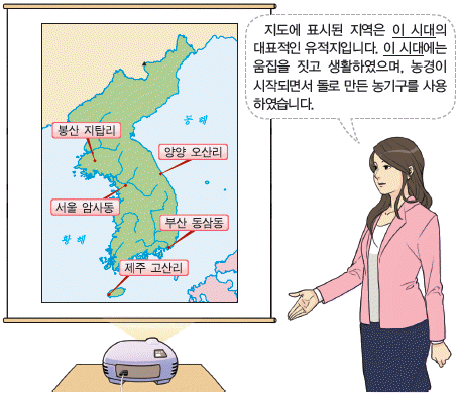
- 반량전 등의 중국 화폐를 사용하였다.
- 대표적인 무덤으로 고인돌을 축조하였다.
- 우경이 시작되어 깊이갈이가 가능해졌다.
- 거푸집을 사용하여 세형 동검을 제작하였다.
- 가락바퀴와 뼈바늘을 이용하여 옷을 만들었다.
(정답률: 94%)

2. (가) 나라에 대한 탐구 활동으로 가장 적절한 것은? [2점]
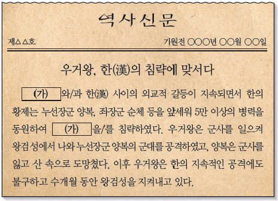
- 임신서기석의 내용을 분석한다.
- 관산성 전투의 원인을 살펴본다.
- 청해진이 설치된 배경을 알아본다.
- 칠지도에 새겨진 명문의 내용을 찾아본다.
- 위만 집권 이후 변화된 경제 상황을 조사한다.
(정답률: 93%)
3. (가), (나) 나라에 대한 설명으로 옳은 것은? [2점]
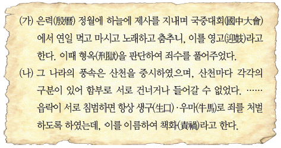
- (가) - 여러 가(加)들이 별도로 사출도를 다스렸다.
- (가) - 특산물로 단궁, 과하마, 반어피 등이 있었다.
- (나) - 제가 회의에서 나라의 중대사를 결정하였다.
- (나) - 사회 질서의 유지를 위해 범금 8조를 만들었다.
- (가), (나) - 제사장인 천군과 신성 지역인 소도가 있었다.
(정답률: 90%)
4. 밑줄 그은 '이 나라'의 문화유산으로 옳은 것은? [2점]
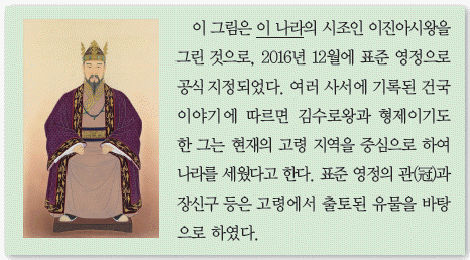
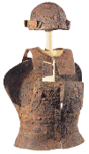
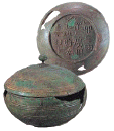
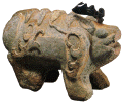
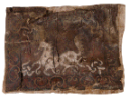
(정답률: 88%)
5. 밑줄 그은 '왕'에 대한 설명으로 옳은 것은? [2점]
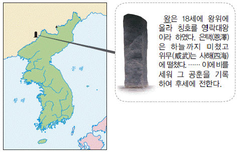
- 국내성에서 평양으로 도읍을 옮겼다.
- 낙랑군을 축출하여 영토를 확장하였다.
- 전진의 순도를 통해 불교를 수용하였다.
- 당의 침입에 대비하여 천리장성을 쌓았다.
- 신라에 군대를 파견하여 왜를 격퇴하였다.
(정답률: 84%)
6. 다음 검색창에 들어갈 인물에 대한 설명으로 옳은 것은? [3점]
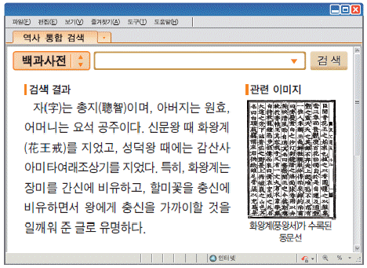
- 진골 귀족 출신으로 화랑세기 등을 저술하였다.
- 외교 문서 작성에 능하여 청방인문표를 집필하였다.
- 인도와 중앙아시아를 순례하고 왕오천축국전을 지었다.
- 명망 높은 승려들의 전기를 정리한 해동고승전을 남겼다.
- 한자의 음과 훈을 차용한 이두를 체계적으로 정리하였다.
(정답률: 58%)
7. (가), (나) 지역에 대한 설명으로 옳은 것을 <보기>에서 고른 것은? [2점]
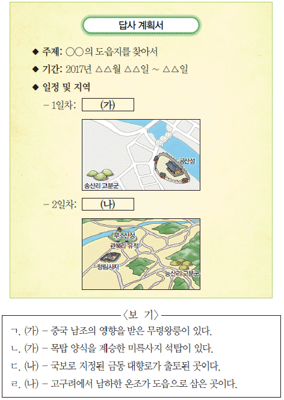
- ㄱ, ㄴ
- ㄱ, ㄷ
- ㄴ, ㄷ
- ㄴ, ㄹ
- ㄷ, ㄹ
(정답률: 59%)
8. 다음 문서를 제작한 국가의 경제 상황에 대한 설명으로 옳은 것은? [3점]
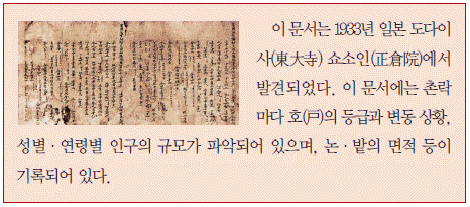
- 모내기법이 전국적으로 확산되었다.
- 빈민 구제를 위한 진대법이 실시되었다.
- 시장을 감독하는 관청인 동시전이 있었다.
- 감자, 고구마 등의 구황 작물이 재배되었다.
- 우리 풍토에 맞는 농법을 기록한 농사직설이 편찬되었다.
(정답률: 74%)
9. (가)에 대한 설명으로 옳은 것은? [2점]
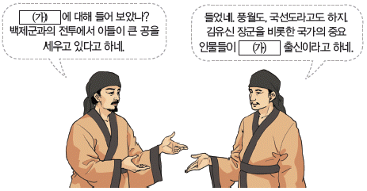
- 국학 내에 설치되었다.
- 경당에서 책을 읽고 활쏘기를 배웠다.
- 진흥왕 때 국가적인 조직으로 정비되었다.
- 귀족들로 구성되어 만장일치제로 운영되었다.
- 유교 경전을 가르치기 위해 박사와 조교를 두었다.
(정답률: 82%)
10. 다음 사건이 일어난 시기를 연표에서 옳게 고른 것은? [1점]
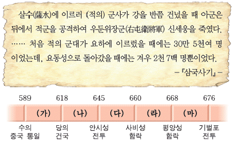
- (가)
- (나)
- (다)
- (라)
- (마)
(정답률: 67%)
11. (가) 인물이 활동한 시기에 있었던 사실로 옳은 것은? [3점]
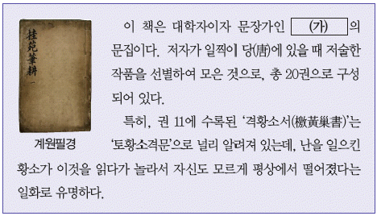
- 국가 주도로 건원중보가 발행되었다.
- 관료전이 지급되고 녹읍이 폐지되었다.
- 원종과 애노의 난 등 농민 봉기가 일어났다.
- 묘청 등이 중심이 되어 서경 천도를 주장하였다.
- 의상이 화엄 사상을 바탕으로 교단을 형성하였다.
(정답률: 64%)
12. (가) 국가에 대한 설명으로 옳지 않은 것은? [1점]
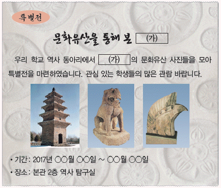
- 전성기에 해동성국이라고도 불렸다.
- 중앙 6부의 명칭을 유교식으로 정하였다.
- 인안, 대흥 등의 독자적 연호를 사용하였다.
- 5경 15부 62주의 지방 행정 제도를 갖추었다.
- 지방관을 감찰하기 위하여 외사정을 두었다.
(정답률: 75%)
13. (가) 인물에 대한 설명으로 옳은 것은? [2점]
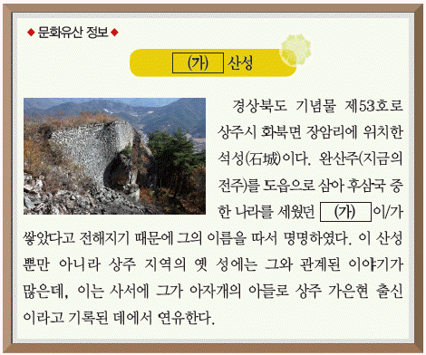
- 북한산에 순수비를 세웠다.
- 양길의 휘하에서 세력을 키웠다.
- 중앙군으로 9서당을 설치하였다.
- 후당, 오월에 사신을 파견하였다.
- 송악에서 철원으로 도읍을 옮겼다.
(정답률: 80%)
14. (가), (나) 사이의 시기에 있었던 사실로 옳은 것은? [3점]
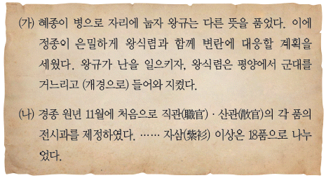
- 5도 양계의 지방 제도가 확립되었다.
- 민생 안정을 위해 흑창이 처음 설치되었다.
- 노비안검법의 실시로 국가 재정이 확충되었다.
- 전국에 12목이 설치되고 지방관이 파견되었다.
- 관학 진흥을 위해 전문 강좌인 7재가 개설되었다.
(정답률: 58%)
15. 밑줄 그은 '경제 정책'으로 옳은 것은? [2점]
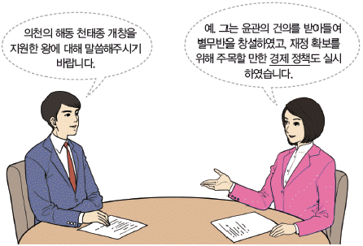
- 왜관을 설치하여 일본과 교역하였다.
- 과전법을 공포하여 전제를 개혁하였다.
- 신돈을 등용하여 전민변정도감을 설치하였다.
- 연분 9등법을 시행하여 수취 체제를 정비하였다.
- 해동통보를 발행하여 화폐의 통용을 추진하였다.
(정답률: 63%)
16. (가) 역사서에 대한 설명으로 옳은 것은? [2점]
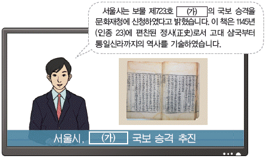
- 남북국이라는 용어를 처음 사용하였다.
- 단군왕검의 건국 이야기가 수록되어 있다.
- 김부식 등이 왕명으로 편찬한 기전체 사서이다.
- 사초, 시정기 등을 바탕으로 실록청에서 편찬하였다.
- 고구려 건국 시조의 일대기를 서사시 형태로 서술하였다.
(정답률: 66%)
17. 다음 글을 쓴 승려에 대한 설명으로 옳은 것은? [2점]
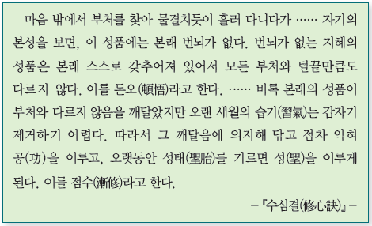
- 무애가를 지어 불교 대중화에 힘썼다.
- 황룡사 구층 목탑의 건립을 건의하였다.
- 교종을 중심으로 선종을 통합하려 하였다.
- 수선사 결사를 제창하여 불교계를 개혁하고자 하였다.
- 법화 신앙을 중심으로 강력한 항몽 투쟁을 표방하였다.
(정답률: 72%)
18. (가) 군사 조직에 대한 설명으로 옳은 것은? [2점]
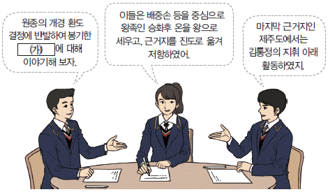
- 국경 지대인 양계에 설치되었다.
- 거란의 침입에 대비하여 창설되었다.
- 최씨 무신 정권의 군사적 기반이었다.
- 신기군, 신보군, 항마군으로 구성되었다.
- 유사시에 향토 방위를 맡는 예비군이었다.
(정답률: 71%)
19. 교사의 질문에 대한 학생의 답변으로 옳은 것은? [2점]
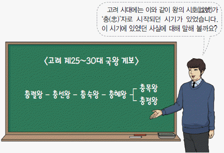
- 최초의 서원인 백운동 서원이 건립되었습니다.
- 서얼이 규장각 검서관에 등용되기도 하였습니다.
- 변발과 호복이 지배층을 중심으로 유행하였습니다.
- 세계 지도인 혼일강리역대국도지도가 제작되었습니다.
- 망이·망소이가 가혹한 수탈에 저항하여 봉기하였습니다.
(정답률: 80%)
20. (가)와 관련된 세시 음식으로 가장 적절한 것은? [1점]
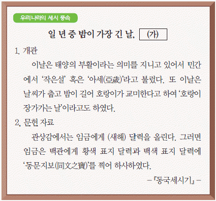
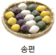
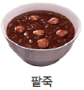
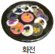
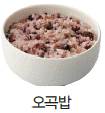
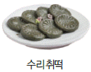
(정답률: 74%)
21. 다음 정책을 시행한 왕의 업적으로 옳은 것은? [2점]
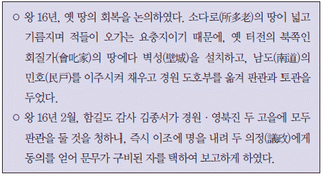
- 독창적인 문자인 훈민정음을 창제하였다.
- 조선의 기본 법전인 경국대전을 반포하였다.
- 궁중 음악을 집대성한 악학궤범을 편찬하였다.
- 균역법을 실시하여 군역의 부담을 줄이고자 하였다.
- 현직 관리에게만 수조권을 지급하는 직전법을 실시하였다.
(정답률: 66%)
22. (가)에 대한 설명으로 옳은 것은? [2점]
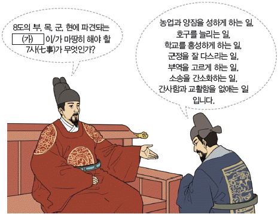
- 직역이 대대로 세습되었다.
- 지방의 행정·사법·군사권을 행사하였다.
- 6조 직계제의 실시로 권한이 약화되었다.
- 유향소의 우두머리로 향회에서 선출되었다.
- 호장, 기관, 장교, 통인 등으로 분류되었다.
(정답률: 75%)
23. (가), (나) 사이의 시기에 있었던 사실로 옳은 것은? [2점]
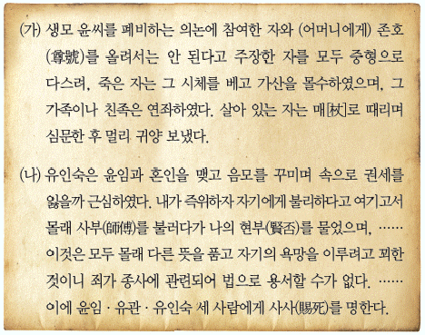
- 서인이 반정을 일으켜 정권을 장악하였다.
- 위훈 삭제를 주장한 조광조 일파가 축출되었다.
- 정여립 모반 사건을 계기로 동인이 피해를 입었다.
- 효종이 죽자 자의대비의 복상 문제로 예송이 전개되었다.
- 사림이 이조전랑 임명을 둘러싸고 동인과 서인으로 나뉘었다.
(정답률: 73%)
24. (가)~(라)의 문화유산을 제작된 순서대로 옳게 나열한 것은? [3점]
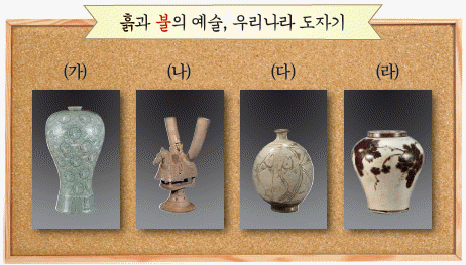
- (가) - (나) - (다) - (라)
- (가) - (나) - (라) - (다)
- (나) - (가) - (다) - (라)
- (나) - (가) - (라) - (다)
- (다) - (나) - (가) - (라)
(정답률: 63%)
25. 다음 문서에 대한 설명으로 옳은 것을 <보기>에서 고른 것은? [1점]
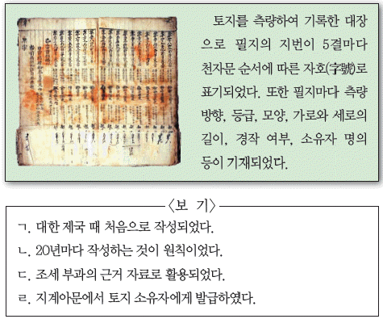
- ㄱ, ㄴ
- ㄱ, ㄷ
- ㄴ, ㄷ
- ㄴ, ㄹ
- ㄷ, ㄹ
(정답률: 51%)
26. (가), (나) 기구에 대한 설명으로 옳은 것은? [3점]
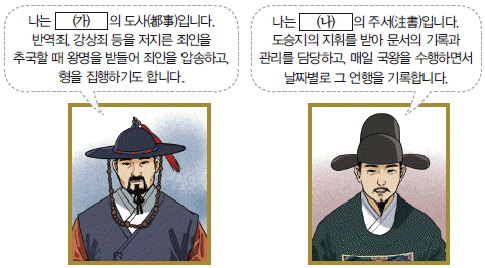
- (가) - 5품 이하의 관원에 대한 서경권을 가졌다.
- (가) - 왕에게 경서와 사서를 강론하는 경연을 주관하였다.
- (나) - 정책을 심의·결정하면서 국정을 총괄하였다.
- (나) - 왕명 출납을 담당하는 왕의 비서 기관이었다.
- (가), (나) - 소속 관원을 대간이라고도 불렀다.
(정답률: 70%)
27. (가)~(라) 전투를 일어난 순서대로 옳게 나열한 것은? [2점]
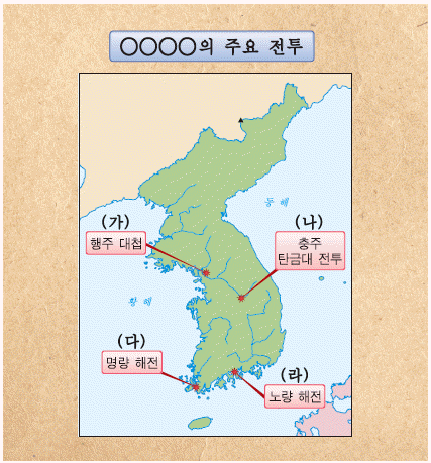
- (가) - (나) - (다) - (라)
- (가) - (나) - (라) - (다)
- (나) - (가) - (다) - (라)
- (나) - (가) - (라) - (다)
- (다) - (나) - (가) - (라)
(정답률: 62%)
28. 밑줄 그은 '이 왕'의 재위 시기에 있었던 사실로 옳은 것은? [2점]
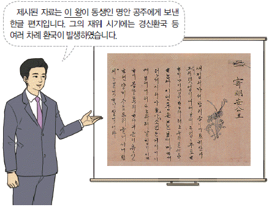
- 나선 정벌에 조총 부대가 파견되었다.
- 청과의 경계를 정한 백두산정계비가 세워졌다.
- 문신 재교육을 위한 초계문신제가 시행되었다.
- 시전 상인의 특권을 축소하는 신해통공이 실시되었다.
- 붕당 정치의 폐해를 경계하기 위해 탕평비가 건립되었다.
(정답률: 63%)
29. 다음 자료의 상황이 나타난 시기에 볼 수 있는 모습으로 적절하지 않은 것은? [2점]
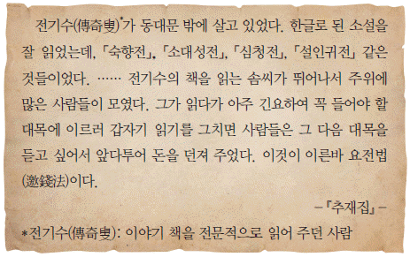
- 벽란도에서 무역을 하는 송의 상인
- 관청에 필요한 물품을 납부하는 공인
- 담배 등의 상품 작물을 재배하는 농민
- 물주의 자금으로 광산을 경영하는 덕대
- 여러 장시를 돌며 물품을 판매하는 보부상
(정답률: 79%)
30. (가)에 대한 설명으로 옳은 것은? [1점]
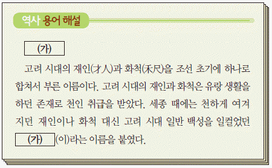
- 매매, 상속, 증여의 대상이 되었다.
- 장례원을 통해 국가의 관리를 받았다.
- 사신을 수행하면서 통역을 담당하였다.
- 일제 강점기에 형평 운동을 전개하였다.
- 청요직 진출을 요구하는 상소를 집단으로 올렸다.
(정답률: 58%)
31. (가), (나) 사건에 대한 설명으로 옳은 것은? [2점]
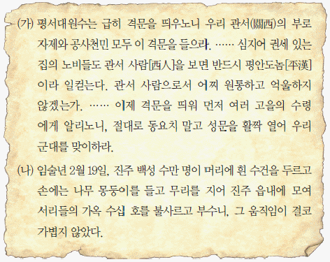
- (가) - 황토현에서 관군에게 승리를 거두었다.
- (가) - 사건의 수습을 위해 박규수가 안핵사로 파견되었다.
- (나) - 삼정이정청 설치의 계기가 되었다.
- (나) - 지역 차별에 반발한 홍경래가 주도하여 봉기하였다.
- (가), (나) - 남접과 북접이 연합하여 조직적으로 전개되었다.
(정답률: 66%)
32. (가) 인물에 대한 설명으로 옳지 않은 것은? [1점]
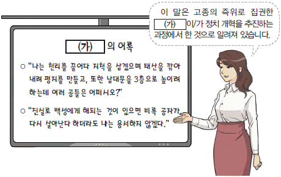
- 왕의 친위 부대인 장용영을 설치하였다.
- 경복궁 중건을 위해 원납전을 징수하였다.
- 대전회통을 편찬하여 통치 체제를 정비하였다.
- 전국의 서원을 47개소만 남기고 모두 철폐하였다.
- 환곡의 폐단을 바로잡기 위해 사창제를 실시하였다.
(정답률: 70%)
33. (가) 시기에 있었던 사실로 옳은 것을 <보기>에서 고른 것은? [3점]
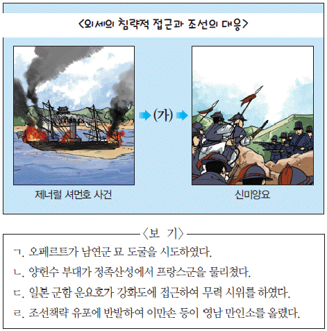
- ㄱ, ㄴ
- ㄱ, ㄷ
- ㄴ, ㄷ
- ㄴ, ㄹ
- ㄷ, ㄹ
(정답률: 74%)
34. 밑줄 그은 '거사'의 결과로 옳은 것은? [2점]
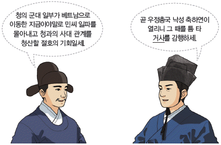
- 미국에 보빙사가 파견되었다.
- 부산, 원산, 인천이 개항되었다.
- 신식 군대인 별기군이 창설되었다.
- 조선과 일본 사이에 한성 조약이 체결되었다.
- 개화 정책을 추진하기 위해 통리기무아문이 설치되었다.
(정답률: 75%)
35. (가)~(다)를 체결된 순서대로 옳게 나열한 것은? [2점]
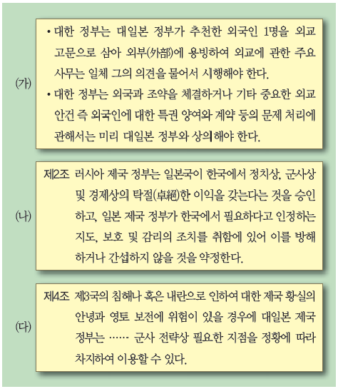
- (가) - (나) - (다)
- (가) - (다) - (나)
- (나) - (가) - (다)
- (나) - (다) - (가)
- (다) - (가) - (나)
(정답률: 32%)
36. (가), (나) 사이의 시기에 있었던 사실로 옳은 것은? [3점]
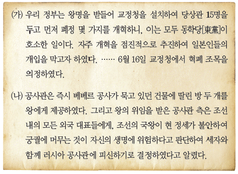
- 조·미 수호 통상 조약이 체결되었다.
- 명성황후가 일본에 의해 시해되었다.
- 영국이 거문도를 불법으로 점령하였다.
- 13도 창의군이 서울 진공 작전을 전개하였다.
- 고종이 환구단에서 황제 즉위식을 거행하였다.
(정답률: 77%)
37. 다음 인물에 대한 설명으로 옳은 것은? [1점]
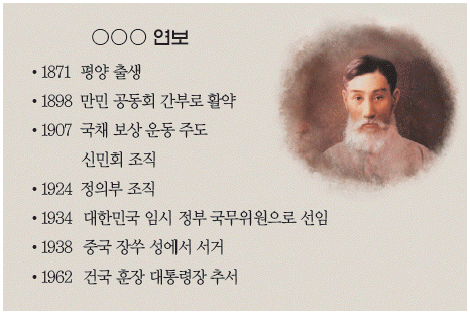
- 조선어 학회 사건으로 구속되었다.
- 샌프란시스코에서 흥사단을 조직하였다.
- 베델과 제휴하여 대한매일신보를 창간하였다.
- 고종의 밀지를 받아 독립 의군부를 조직하였다.
- 의열단의 활동 지침인 조선 혁명 선언을 집필하였다.
(정답률: 56%)
38. 밑줄 그은 '이 조약'의 체결에 대한 저항으로 옳지 않은 것은? [2점]
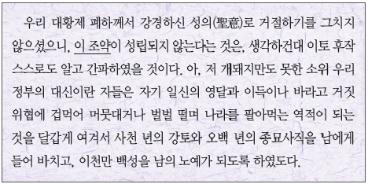
- 민영환, 조병세 등이 자결로써 항거하였다.
- 이상설이 매국노 처단을 요구하는 상소를 올렸다.
- 고종이 헤이그 만국 평화 회의에 특사를 파견하였다.
- 유생 출신 유인석이 이끄는 의병이 충주성을 점령하였다.
- 나철, 오기호 등이 5적 처단을 위해 자신회를 조직하였다.
(정답률: 59%)
39. (가)~(마)에 대한 설명으로 옳은 것은? [2점]
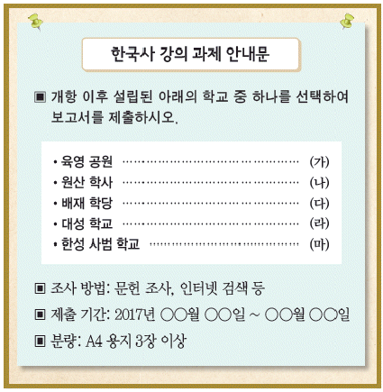
- (가) - 헐버트, 길모어 등 외국인이 교사로 초빙되었다.
- (나) - 교육 입국 조서 반포를 계기로 설립되었다.
- (다) - 간도에 만들어진 민족 교육 기관이다.
- (라) - 덕원 지방의 관민들이 합심하여 설립하였다.
- (마) - 개신교 선교사가 선교 목적으로 세웠다.
(정답률: 67%)
40. 다음 자료에 해당하는 사업에 대한 설명으로 옳은 것은? [2점]
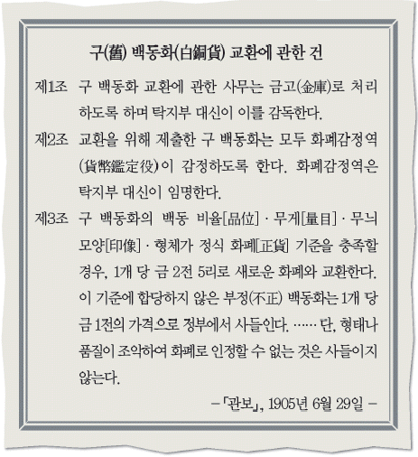
- 화폐 발행을 위해 전환국이 설치되었다.
- 재정 고문 메가타의 주도로 시행되었다.
- 은본위제가 본격적으로 실시되는 배경이 되었다.
- 황국 중앙 총상회가 중심이 되어 반대 운동을 전개하였다.
- 함경도 관찰사 조병식이 방곡령을 선포하는 계기가 되었다.
(정답률: 72%)
41. 다음 회의가 개최된 시기를 연표에서 옳게 고른 것은? [2점]
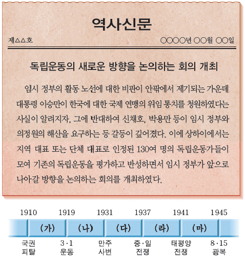
- (가)
- (나)
- (다)
- (라)
- (마)
(정답률: 57%)
42. 밑줄 그은 '이 운동'의 표어로 적절한 것은? [1점]
- 조선 사람 조선 것으로
- 잘살려면 어린이를 위하라
- 한민족 1천만이 한 사람이 1원씩
- 배우자 가르치자 다 함께 브나로드
- 천차만별의 천시(賤視)를 철폐하자
(정답률: 74%)
43. 다음 방침이 결정된 이후 시행된 일제의 정책으로 옳은 것은? [2점]
- 조선인에 한하여 적용되는 조선 태형령을 시행하였다.
- 강압적 통치를 목적으로 헌병 경찰 제도를 실시하였다.
- 회사 설립 시 총독의 허가를 받도록 하는 회사령을 공포하였다.
- 독립운동 탄압을 위해 조선 사상범 예방 구금령을 제정하였다.
- 근대적 토지 소유권 확립을 명분으로 토지 조사 사업을 실시하였다.
(정답률: 74%)
44. 다음 사건에 대한 탐구 활동으로 가장 적절한 것은? [2점]
- 자유시 참변이 일어난 원인을 조사한다.
- 신흥 무관 학교의 설립 배경을 파악한다.
- 복벽주의를 내세운 단체의 활동을 정리한다.
- 김구가 조직한 한인 애국단의 활동을 살펴본다.
- 중광단을 중심으로 북로 군정서가 조직된 과정을 알아본다.
(정답률: 78%)
45. (가) 운동에 대한 설명으로 옳은 것은? [3점]
- 조선 노동 총동맹을 중심으로 전개되었다.
- 일제가 조작한 1⑤인 사건으로 타격을 입었다.
- 신간회 중앙 본부가 진상 조사단을 파견하였다.
- 일제가 이른바 문화 통치를 실시하는 배경이 되었다.
- 국내에서 민족 유일당 운동이 전개되는 계기가 되었다.
(정답률: 64%)
46. (가)~(다) 학생이 발표한 법령을 공포된 순서대로 옳게 나열한 것은?(그림에서 왼쪽부터 가, 나, 다) [2점]
- (가) - (나) - (다)
- (가) - (다) - (나)
- (나) - (가) - (다)
- (나) - (다) - (가)
- (다) - (가) - (나)
(정답률: 62%)
47. 밑줄 그은 '개헌'의 결과로 옳은 것은? [3점]
- 정부 형태가 내각 책임제로 바뀌게 되었다.
- 통일 주체 국민 회의에서 대통령이 선출되었다.
- 5년 단임의 대통령이 직선제에 의해 선출되었다.
- 국회에서 간접 선거 방식으로 대통령이 선출되었다.
- 개헌 당시의 대통령에 한해 중임 제한이 철폐되었다.
(정답률: 64%)
48. 다음 정부 시기에 볼 수 있는 모습으로 적절한 것은? [1점]
- 농지 개혁법 제정 소식을 듣고 기뻐하는 농민
- 금융 실명제에 따라 신분증 제시를 요구하는 은행원
- 외환 위기 극복을 위해 금모으기 운동에 참여하는 국민
- 한·칠레 자유 무역 협정(FTA)의 비준을 보도하는 기자
- 한·독 근로자 채용 협정에 의해 서독으로 파견되는 광부
(정답률: 76%)
49. 다음 자료에 해당하는 민주화 운동에 대한 설명으로 옳은 것은? [2점]
- 한·일 국교 정상화에 반대하여 일어났다.
- 4·13 호헌 조치에 국민들이 저항하며 시작되었다.
- 3·15 부정 선거에 항의하는 시위에서 비롯되었다.
- 관련 기록물이 유네스코 세계 기록유산으로 등재되었다.
- 3·1 민주 구국 선언을 통해 긴급 조치 철폐 등을 요구하였다.
(정답률: 68%)
50. 밑줄 그은 '이 선언'이 발표된 결과로 옳은 것은? [2점]
- 남북 기본 합의서가 채택되었다.
- 남북 조절 위원회가 설치되었다.
- 남북한 유엔 동시 가입이 이루어졌다.
- 남북한이 개성 공단 조성에 합의하였다.
- 이산가족의 고향 방문이 처음으로 성사되었다.
(정답률: 65%)